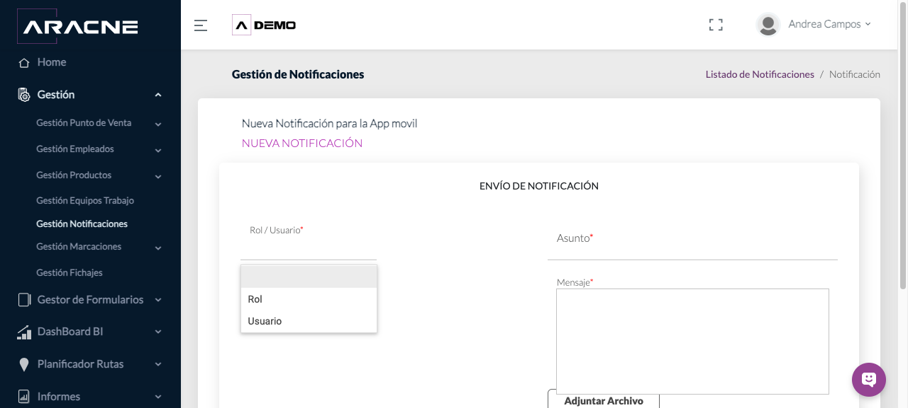
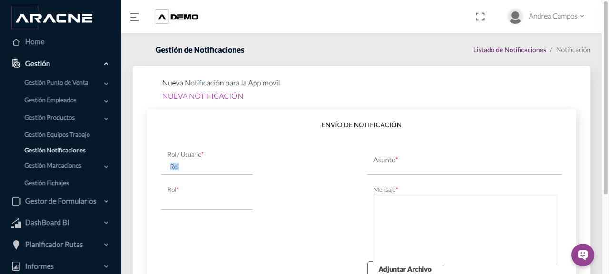
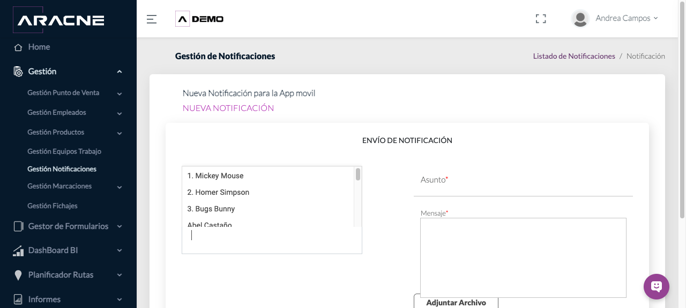
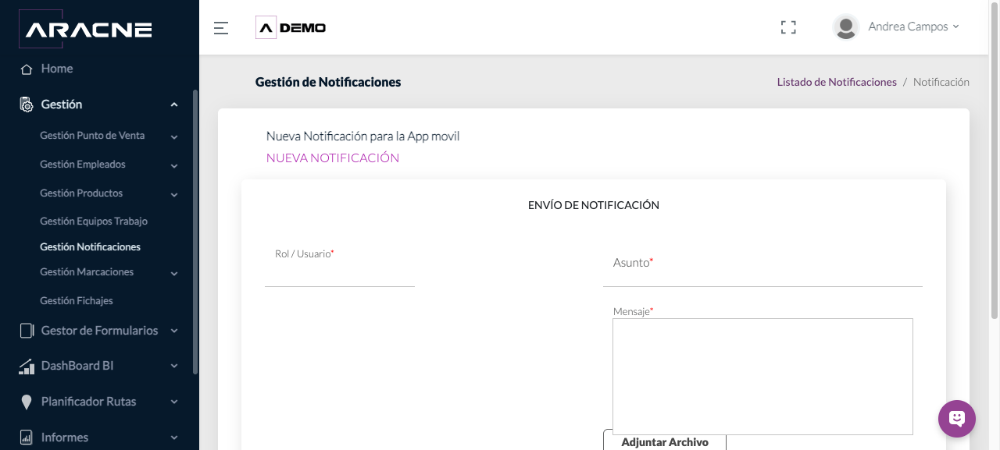
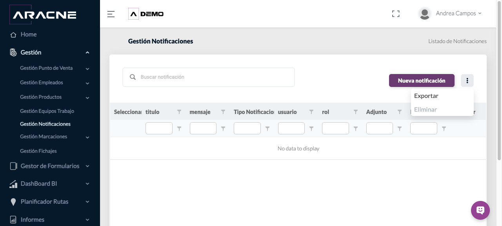

Back Office
Notificaciones
Preparar y enviar una comunicación a la aplicación móvil dirigida a un rol completo o a usuarios concretos.
Requisitos
Los roles y usuarios destinatarios deben existir en la campaña. Prepara el asunto, el mensaje y, si corresponde, el archivo adjunto.
Dónde estáGestión › Gestión Notificaciones.
Estado del entornoEl listado de ESPAÑA - DEMO no contiene notificaciones. Por ello, la acción Eliminar aparece deshabilitada y no se ha generado una notificación solo para probarla.
Consultar notificaciones
- Abre el módulo. Puedes buscar una notificación o filtrar por título, mensaje, Tipo Notificación, usuario, rol, Adjunto y Fecha Creación.

Paso 1. Listado vacío de ESPAÑA - DEMO con buscador y filtros.
Crear una notificación
- Pulsa Nueva notificación.
Paso 1. Botón de creación situado sobre el listado. - En Rol / Usuario, elige el modo de destinatario.

Paso 2. Las dos formas disponibles de dirigir la notificación. - Si seleccionas Rol, aparece un segundo selector obligatorio para elegir el rol destinatario.

Paso 3. Formulario adaptado al envío por rol. - Selecciona el rol que recibirá la notificación. Entre los valores disponibles se muestran ADMINISTRADOR, ANALISTA DE DATOS, ARACNE SPECIALIST, CLIENTE, DIRECTOR DE CUENTA, JEFE DE EQUIPO, MERCHAN y PRODUCT SPECIALIST.
Paso 4. Ejemplo del campo Rol cumplimentado. - Si eliges Usuario, aparece un selector obligatorio que admite usuarios concretos.
Paso 5. Formulario adaptado al envío por usuario. - Abre Usuario y selecciona uno o varios destinatarios disponibles en la campaña.

Paso 6. Lista de usuarios que pueden recibir la notificación. - Introduce un Asunto y redacta el Mensaje. Ambos campos son obligatorios.

Paso 7. Campos obligatorios de contenido. - Si necesitas incluir un documento, pulsa Adjuntar Archivo y selecciona el archivo desde el equipo.
Paso 8. Control opcional de archivo adjunto. - Revisa destinatario, asunto, mensaje y adjunto. Pulsa Enviar únicamente cuando quieras remitir la notificación a la aplicación móvil.
Paso 9. Botón Enviar al final del formulario.
Menú de acciones
- Abre el botón de tres puntos. El menú contiene Exportar y Eliminar.

Paso 1. Acciones Exportar y Eliminar; Eliminar aparece deshabilitado sin registros. - Pulsa Exportar para descargar ListadoNotificaciones.xlsx. El archivo contiene título, mensaje, Tipo Notificación, usuario, rol, Adjunto y Fecha Creación.
Paso 2. Opción Exportar del menú principal.
Campos y controles principales
- Rol / Usuario: determina si el envío se dirige a un rol o a usuarios concretos.
- Rol: rol completo que recibirá la notificación.
- Usuario: uno o varios usuarios seleccionados como destinatarios.
- Asunto: título de la comunicación; obligatorio.
- Mensaje: contenido principal; obligatorio.
- Adjuntar Archivo: incorpora un archivo opcional.
Resultado esperado y comprobación
Al enviar, la notificación queda dirigida al rol o a los usuarios seleccionados para su recepción en la aplicación móvil.
Consulta el listado y filtra por asunto, usuario, rol o fecha para localizarla cuando existan registros.
Problemas habituales
- Si no aparece un usuario o rol, comprueba que exista en la campaña.
- Si no puedes enviar, revisa los campos obligatorios Rol/Usuario, destinatario, Asunto y Mensaje.
- Si el listado está vacío, Eliminar permanece deshabilitado.
- Si necesitas conservar una copia del listado, utiliza Exportar.